十止 |
止痛 |
止暈 |
止驚 |
止咳 |
止喘 |
止癢 |
止鳴 |
止酸 |
止吐 |
止帶 |
六對 |
鎮靜、興奮 |
降壓、升壓 |
降率、強心 |
止血、活血 |
利尿、止遺 |
通便、止瀉 |
利五官 |
利咽 |
明目 |
助聽 |
鼻通 |
美容 |
三抗一提 |
抗過敏 |
抗感染 |
抗風濕 |
提高免疫力 |
退燒 |
三調整 |
調整植物神經功能 |
調整內分泌功能 |
調整月經週期、經量 |
兩補 |
補腎 |
補血 |
三健 |
健腦 |
健肝血 |
健脾助運 |
其他功能 |
催乳 |
理氣消脹 |
降糖 |
解痙、排石 |
利膽 |
安眠 |
收斂汗液（止汗） |


 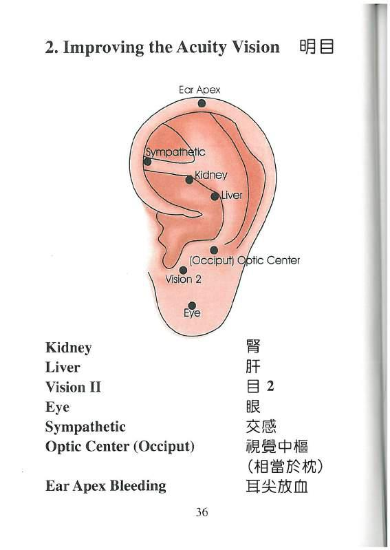
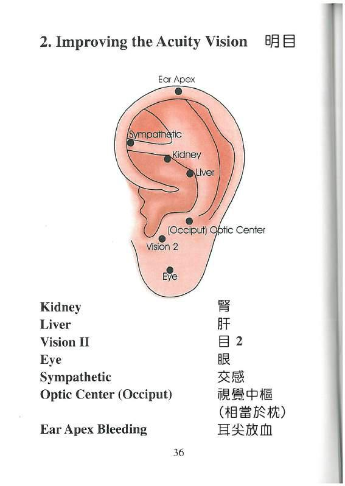


神經衰弱 |
瘛症 |
前頭痛 |
偏頭痛 |
後頭痛 |
頭頂痛 |
腦震盪後遺症 |
精神分裂症 |
植物神經功能紊亂 |
多夢 |
癲癇 |
面肌痙攣 |
面神經麻揮 |
幻肢痛 |
三叉神經痛 |
肋間神經痛 |
憂鬱症、焦慮、緊張、神經敏感 |
疲勞綜合症 |
多動症 |
自閉症 |
亞斯伯格綜合症 |

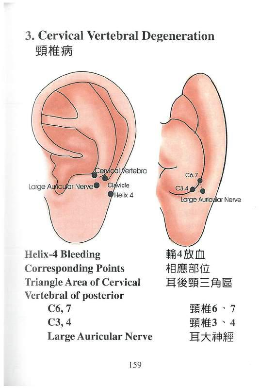
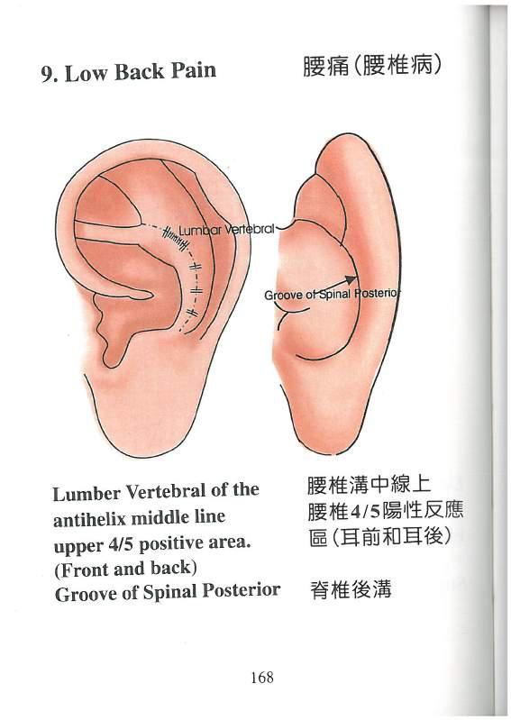
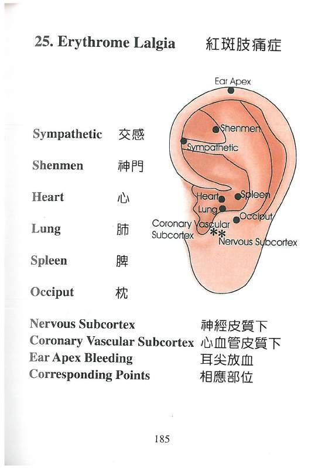
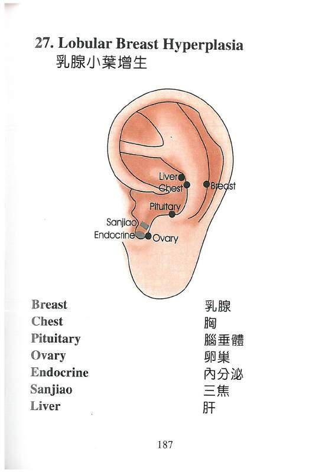
 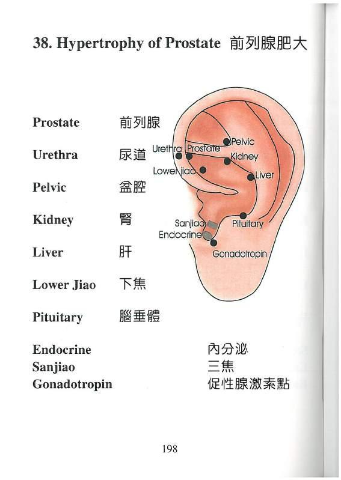
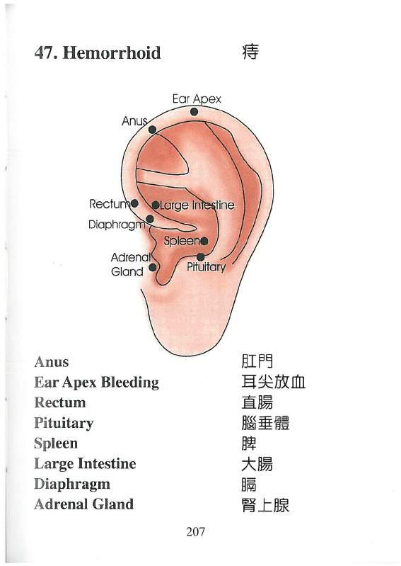
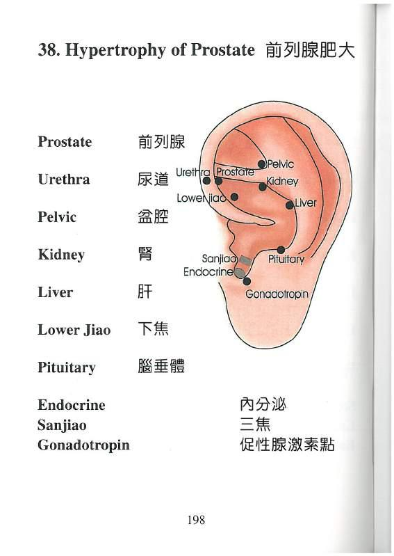
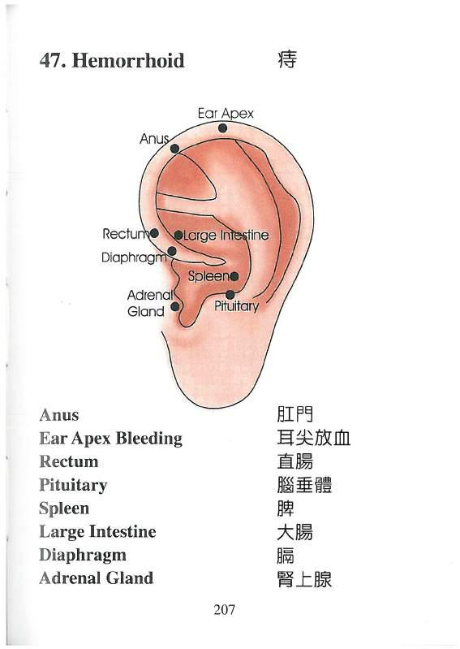
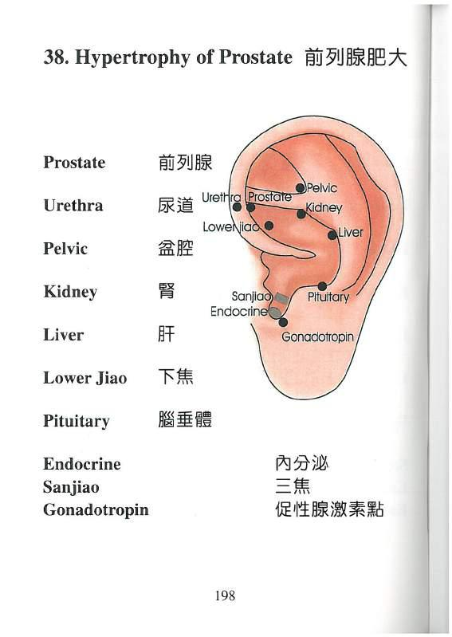
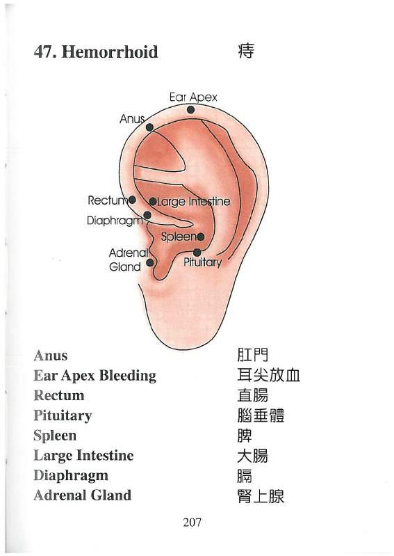